The flyPad pages get a Material 3 dark look on the flyPad cyan: tonal cards, dense list rows with switches and chips, a segmented control for the tabs. A shared Material kit (page, cards, section headers, list rows, status and action chips, switch, segmented control, buttons, progress bar, banner) on new theme tokens for the blue, dark and light themes is used by every redesigned page. The Ground pages came first. The functions of the pages do not change.
| Page | New look |
|---|---|
| Services | Three columns: the doors and the ground equipment as scrolling lists (switch or Request / Release chip, GSX status and fuel progress on the rows); the aircraft from above, nose up and zoomed on the fuselage, its doors coloured with their state, the holds and service tags (A380X two decks, A32NX one); the GSX card (switch, turnaround timeline of the departure or arrival with its Baggage step, other GSX services as chips, GSX questions and messages; a long GSX menu scrolls inside the card; see "GSX services link" and "GSX turnaround" below). Status chips: GPU, tug, doors open, chocks and cones (A32NX). |
| Pushback | The map fills the left card. A control rail: system switch, Call / Release tug button, parking brake row, Backward / Paused / Forward, a steering dial over the direction slider, the speed slider, Left / Straight / Right and the controller switch. When the aircraft is at the SimBrief origin or destination, the Navigraph airport map (aprons, taxiways, runways, guidance lines, stands) is drawn under the pushback map, heading up. |
| Fuel | The aircraft with its tanks on a wide card and a refuel rail (target, slider, start and stop, duration, plan summary). A380X: the whole aircraft outline with the tank quantities in tables (each feed tank now shows its own quantity; before, the four feed tanks of the drawing read feed tank 3). A32NX: the over-wing outline with its tanks filled, the quantities as tiles. |
| Payload | The cabin and seat map on a full-width card with the holds under it (load over capacity, click to plan), then the load table, the boarding controls and the balance chart. |
| Taxi | The route form as cards, the runway crossings as banners, the map buttons and the frequency box in the kit. |
Pushback map fix: the airport under the pushback map redrew only after the map centre had moved about 100 m, so the aircraft slid over a frozen airport while the map was dragged. It now follows every move.
The airport layer drew the whole Navigraph airport (thousands of points) on every position update, 20 times a second: the A380X ran at 21 FPS on the Pushback page against 42 FPS on another page (capture). It now draws only the shapes and lines that reach the map window, and redraws only when the picture moves by about a pixel, at most 10 times a second.
Leaving the Pushback page stopped the tug (with a short "Pausing Pushback" message), because the rudder pedal and sidestick steering lived in the page. The steering now runs in the captain flyPad itself, whatever page is shown (when the controller switch of the Pushback rail is on). The page resets the tug commands only when it opens with no tug attached (captain flyPad), so a pushback in progress goes on when the page is left and opened again.
The aft right door button said "Main 4 R" but opened MAIN 5R, the door the SD DOOR page and the FWS name. It is now labelled Main 5 R and its marker on the planform sits on door 5 R. A new Main 4 R button opens and closes MAIN 4R. The catering truck still docks at MAIN 5R: a button only moves its door; the door a ground vehicle (or GSX) docks at comes from the aircraft configuration.
The A380X GSX profile boards at MAIN 1L, 2L, 4L and 5L, but the Doors card had switches only for MAIN 1L and 2L on the left side: a door GSX opened at 4L or 5L for boarding had no row and no planform marker, so it could not be closed from the flyPad. The Doors card now has the rows Main 4 L and Main 5 L, and the planform the markers 4 L and 5 L on the left side. The card lists Main 1 L, Main 2 L, Upper 1 L, Main 4 L, Main 5 L, Main 4 R, Main 5 R and the cargo row; its header counts 8 ("n open · 8"), and the list scrolls (it keeps at most half the column, so that the ground equipment keeps the other half).
With a long GSX menu (e.g. "Activate Services" with 10 entries) the GSX card ran past its bottom border and the "Close the GSX menu" link lay on top of the last menu buttons. The menu ("GSX asks", its title and one chip per entry) now scrolls inside the card, a long entry is cut with "...", and "Close the GSX menu" has its own line under the entries.
Tug speed slider fix: the handle of the vertical tug speed slider of the Pushback rail sat 5 px right of its rail (the slider library offset suits its own 14 px handle, the flyPad handle is 24 px). It is now centred on the rail.
| Limitation | Why | What to do |
|---|---|---|
| The airport under the pushback map needs the Navigraph airport map. | It is drawn from the Navigraph airport database, only at the SimBrief origin or destination. | Link a Navigraph account and import a SimBrief flight plan. |
| A380X: no switch for MAIN 2R and UPPER 1R, the doors GSX catering uses. | Only the doors GSX boards at (MAIN 1L, 2L, 4L, 5L) got switches. | - |
| Spacing is made with margins, not the CSS gap. | The sim browser (Coherent GT) ignores the CSS gap property. | - |
| # | Do this | Expected result |
|---|---|---|
| 1 | A380X at a gate, aircraft powered, SimBrief flight plan imported. Open flyPad > Ground > Services. | Three columns: DOORS and ground equipment lists, the aircraft from above (two decks) with its doors, the GSX card. Nothing cut at the edges. |
| 2 | Open a door with its switch in the list. | The row status changes and the door shape on the aircraft drawing changes colour. |
| 3 | Repeat on the A32NX. | Same layout with the single-deck A320 drawing and the chocks and cones chips. |
| 4 | Open Ground > Pushback (Navigraph linked, aircraft at the SimBrief origin). | The map on the left with the airport under it; the control rail on the right. |
| 5 | Drag the pushback map. | The airport moves with the aircraft symbol at once (no sliding over a frozen airport). |
| 6 | A380X: compare the frame rate (MSFS FPS display) on the Pushback page and on the Dashboard. | About the same frame rate on both pages (before the fix, about half on the Pushback page). |
| 7 | Call the tug and push back with the controller switch on (sidestick back, rudder pedals to steer). During the push open the Dashboard and steer with the rudder pedals. | The pushback goes on and follows the rudder pedals; no "Pausing Pushback" message. Open Pushback again: the push goes on. |
| 8 | A380X at a stand, engines off: Ground > Services, Doors card. Switch Main 5 R on, then ECAM control panel DOOR key. | The SD DOOR page shows MAIN 5R open (the same door); the 5 R marker on the planform lights up. Switch it off. |
| 9 | Switch Main 4 R on, wait until open, then off. | The 4th right main deck door opens and closes; Main 5 R stays closed. |
| 10 | A380X at a gate with GSX Pro (Remote control server on), GSX linked on Ground > Services. Board with GSX at a rear left door (4L or 5L), or switch Main 4 L on in the Doors card. | The Doors card has the rows Main 4 L and Main 5 L (header "n open · 8", the list scrolls); the 4 L / 5 L marker on the planform lights up with the open door. |
| 11 | Switch Main 4 L (or Main 5 L) off. | The door closes; the row and the marker show it closed. |
| 12 | Open a long GSX menu (e.g. "Activate Services") in the GSX card. | The menu stays inside the card and scrolls; "Close the GSX menu" is on its own line under the last entry, not over a button. |
| 13 | Look at the vertical tug speed slider on the Pushback rail and move it. | The handle is centred on its rail over the whole travel. |
| 14 | Open Ground > Fuel on the A380X, then on the A32NX. | A380X: whole aircraft with tank tables, each feed tank with its own quantity. A32NX: wing tanks filled, quantities as tiles. The refuel rail on the right. |
| 15 | Open Ground > Payload, then Ground > Taxi. | Payload: cabin card across the page, holds under it, load table, boarding and balance cards. Taxi: route cards and map in the new look. |
The rest of the flyPad in the same Material look, so that every page matches. The shared switch, segmented selects, text fields, drop-downs and tooltips take the new look, so every page follows.
| Part | New look |
|---|---|
| Frame | A tab bar (see "Tab bar" below; first built as a navigation rail with the icon names), the status bar, the quick controls as a card (brightness sliders with their Auto switch, state tiles, sim rate tile at the bottom right), the section tabs as a segmented control. |
| Dashboard | First the flight card (airports, progress, figure tiles, route, SimBrief import) and the Important Information column; replaced by the context-aware Dashboard (see "Dashboard: the context-aware landing page" below). |
| Dispatch | Overview: the nose drawing on a wide card and the aircraft figures in three lists; OFP and Printouts in kit cards and buttons. |
| Performance | A shared calculator kit (form cards, labelled rows, result tiles, the fill-from button): takeoff, landing and descent results as tiles; temperature correction with one row per published altitude and its corrected value beside it. A32NX: a new Buffet tab (see "Performance > Buffet" below). |
| Navigation | Chart list, viewer controls and pinned charts in the kit. |
| ATC | Type filter chips, controller cards with their buttons always shown, the COM 1 card. |
| Failures | One layout: the ATA chapters on the left (failure count, red count of active ones), the open chapter failures on the right as rows with a switch (red when failed). A search lists the matching failures of every chapter; Active failures lists everything failed, with Restore all. The "not yet guaranteed" note is the info icon beside the title. |
| Checklists | The list with done / next marks and counts, the open checklist with its progress. |
| Presets | State tiles with the loading card; lighting presets beside the automatic loading. |
| Settings | Two panes: the categories beside the open page. Settings > flyPad has the theme choice, with a custom theme (see "Custom flyPad theme" below). |
| # | Do this | Expected result |
|---|---|---|
| 1 | Either aircraft, flyPad on. Look at the left rail. | Icons with their names; the open section in a cyan pill. |
| 2 | Open the quick controls from the status bar. | A card with the brightness slider and its Auto switch, state tiles and the sim rate tile at the bottom right. |
| 3 | Open Dashboard, then Dispatch > Overview, OFP, Printouts. | Cards in the new look; the A380X / A320 nose drawing on the Overview. |
| 4 | Open Performance > Takeoff, Descent, Landing, Temperature Correction. | Form cards and result tiles; the temperature correction lists one row per altitude with its corrected value. |
| 5 | Open Navigation, ATC, Failures, Checklists, Presets. | Every page in the new look, no old grey boxes. |
| 6 | Open Settings and pick a category. | Two panes: categories on the left, the open page on the right. |
| 7 | Repeat on the first officer flyPad (see "Independent captain and first officer flyPads"). | Same look; the quick controls work there too. |
A check of every flyPad page on both aircraft and both tablets after the redesign found 23 problems: three layout bugs and parts still in the old look or with poor texts. They are fixed:
| Area | Fix |
|---|---|
| Throttle calibration | Opened inside the two-pane Settings it was taller and wider than the pane: the button bar was cut and, with 4 axes on the A380X, Axis 4 and Save and Apply were off screen. It is now one card that fits, the axes in one row, the button bar always visible, a new detent gauge. The in-detent highlight also works at exactly 0 (its colour is now the light primary, not green). |
| Settings | About: the content covered the title, now in the page flow with build info rows. The open Settings category gets its icon colour and bold label (the active class was lost). Navigraph sign-in, SimBrief trash, Aircraft Options Select, Automatic Call Outs Reset and the Sim Options Calibrate button and SimBridge status in the kit look; language and keyboard selects sized like the others. |
| Dialogs and shared parts | Confirmation and alert dialogs, scroll buttons, progress bar, card, divider, the critical error page and the toasts (each toast type its own colour, errors red) no longer use the old colours. |
| Ground pages | Services legend at its small size; Taxi frequencies button and panel, empty-state text, one-line database chip, Entry chevron; Payload balance chart in the new colours and font; Fuel: no "NaN %" or full bars while the tank capacities are still 0. |
| Texts | Presets help in cards, with the A380X wording (MFD with KCCU, AFS CP); Performance tab "Descent"; "1 active failure", "1 failure"; descent notes without a trailing separator; the A380X descent legend names the A320 FCOM anti-ice source; chart list and pinned charts empty texts; ATC network name in capitals and an empty controller list message. |
| Limitation | Why | What to do |
|---|---|---|
| A tooltip ("Click Text to Change the Preset's Name") can stay on screen after leaving the Presets page under the mouse. | An older flyPad bug, not part of these fixes. | Move the mouse over the flyPad again. |
| # | Do this | Expected result |
|---|---|---|
| 1 | A380X: flyPad > Settings > Sim Options > Calibrate. | The calibration fits the pane: four axes in one row, the button bar with Save and Apply visible. |
| 2 | Same on the A32NX. | Two axes, the button bar visible. |
| 3 | Move a throttle into a detent, incl. the 0 (idle) detent. | The detent is highlighted, also at exactly 0. |
| 4 | Settings > About. | The title is not covered; build info as rows. |
| 5 | Click several Settings categories. | The open category has a coloured icon and a bold label. |
| 6 | Trigger a confirmation dialog (e.g. Ground > Payload deboarding) and a toast. | Both in the Material colours; an error toast is red. |
| 7 | Ground > Fuel right after loading the aircraft. | No "NaN %" and no full bars before the tank capacities are known. |
| 8 | Failures page with one failure active. | The text reads "1 active failure" (singular). |
| 9 | Failures: open ATA 27, switch PRIM 2 on, open Active failures, press Restore all. | PRIM 2 turns red with a red switch, ATA 27 shows a red 1, the header chip reads "1 active failure"; Restore all empties the list. |
| 10 | Failures: type BLEED in the search. | All results: the bleed failures of ATA 36 and 73, grouped, the word underlined; a switch there fails the system. |
| 11 | Performance tabs. | The descent calculator tab is named "Descent". |
On the redesigned Payload page the LOAD title sat on its own line above the load table and the balance chart left an empty band in its card. Now:
| Limitation | Why | What to do |
|---|---|---|
| A full MSFS restart is needed after an update. | The chart scale lives in the aircraft config files (flypad-payload.json5). | Restart the sim after installing. |
| # | Do this | Expected result |
|---|---|---|
| 1 | A32NX at a gate, flyPad > Ground > Payload. | LOAD is on the PLANNED / CURRENT row of the load table. |
| 2 | Import a SimBrief flight plan whose load differs from the planned one (no boarding running). | A full-width SimBrief button appears under the table. |
| 3 | Look at the balance chart. | It fills its card; the lowest grid line is 40 t, labels centred on their lines, the unit under the lowest label. |
| 4 | Repeat on the A380X. | Same layout; the lowest grid line is 270 t. |
Both tablets showed the same flyPad: their screens share one material in the cockpit model and one gauge drew on it, so one pilot changing a page changed it for the other. Now the first officer tablet has its own flyPad gauge (efb.html?Index=2), with a new material on its screen in the cockpit model.
| Per tablet | Shared |
|---|---|
| The page shown and the navigation | The flyPad settings |
| The loaded OFP (SimBrief import) | The aircraft state (doors, services, fuel, payload) |
| The checklists and their progress | |
The brightness and its Auto setting (first officer: L:A32NX_EFB_2_BRIGHTNESS, settings EFB_2_*) | |
A32NX: the power button (first officer: H:A32NX_EFB_2_POWER; before, both buttons sent the same event, so one press toggled both tablets) |
The actions that change the shared aircraft state by themselves run on the captain flyPad only: the tug release after a pushback, the automatic loading of lighting presets, GSX remote control, the rudder pedal and sidestick steering of the pushback, and the reset of the tug commands when the Pushback page opens with no tug attached. A flyPad clears only the OANS taxi flags it has set itself.
| Limitation | Why | What to do |
|---|---|---|
| Without the aircraft-large-files companion, the first officer tablet keeps showing the captain flyPad. | The new screen material is in the high-detail cockpit model, which lives in aircraft-large-files (A380X 24f7b02, A32NX d3060ea); the large-files pointer of this branch is not bumped yet. | Merge the two large-files commits, then bump the large-files pointer. |
| A full MSFS restart is needed after an update. | panel.cfg, the cockpit behaviour and the model change. | Restart the sim after installing. |
| Lighting presets load automatically from the captain flyPad only. | Two flyPads would load them twice. | Keep the captain flyPad on. |
| # | Do this | Expected result |
|---|---|---|
| 1 | A380X with this branch and the large-files companion, MSFS restarted. Turn both tablets on. Open Dashboard on the captain tablet and Ground > Fuel on the first officer tablet. | Each tablet shows its own page. |
| 2 | Import the SimBrief OFP on the captain tablet only. | The captain Dispatch > OFP shows it; the first officer OFP stays empty until imported there. |
| 3 | Change the brightness in the quick controls of the first officer tablet. | Only that tablet changes. |
| 4 | Open a checklist and check items on one tablet. | The other tablet checklist is unchanged. |
| 5 | Repeat on the A32NX; then press the power button of the right tablet. | Only the right tablet turns off. |
| 6 | Push back with the flyPad, then open and leave the Pushback page on the first officer tablet during the push. | The pushback does not stop (leaving the page stops it on neither tablet). |
The quick controls pane is drawn inside the status bar. When the status bar shows an issue (red), a click on it opens the troubleshooting page, so every click in the quick controls, and the click that closes them, also opened that page. The pane and its backdrop now keep their clicks, and the backdrop closes the pane on the click itself (closing on mouse down let the click land on the status bar under it).
| # | Do this | Expected result |
|---|---|---|
| 1 | A flyPad with a red status bar (an issue listed in Settings > About > Troubleshooting). Open the quick controls. | The quick controls open. |
| 2 | Click a switch or slider in the quick controls. | The control works; the page under it stays (no troubleshooting page). |
| 3 | Click outside the quick controls. | They close; the troubleshooting page does not open. |
| 4 | Click the red status bar. | The troubleshooting page opens, as before. |
| # | Do this | Expected result |
|---|---|---|
| 1 | Load the aircraft several times (new flights) and open flyPad > Checklists each time. | The checklists are always listed. |
| 2 | Aircraft cold and dark (unpowered). Open a checklist, check all its items, but do not mark it. | The list shows an empty circle for it. |
| 3 | Press Mark checklist as complete. | The list shows a filled green check for it, although the aircraft is unpowered. |
The Day, Dawn/Dusk and Night drop-downs of the automatic preset loading offered only the presets that had a name: with unnamed presets they offered only "None". They now list the eight presets as "<number> - <name>" ("No Name" when unnamed).
| # | Do this | Expected result |
|---|---|---|
| 1 | flyPad > Presets > Interior Lighting with no preset named. Turn on the automatic loading and open the Day drop-down. | None, then 1 - No Name ... 8 - No Name. |
| 2 | Name preset 2 "Taxi" and open the drop-down again. | It lists 2 - Taxi among the eight. |
| 3 | Pick 2 for Day, reload the flight in daytime with the aircraft powered. | Preset 2 is loaded by the captain flyPad. |
The flyPad error screen only said that something went wrong. It now shows the error (name and message), the first lines of its stack and the React components it was thrown in, so a crash can be reported and found.
| # | Do this | Expected result |
|---|---|---|
| 1 | There is no normal way to crash the flyPad on purpose. When the error screen appears (or in the browser harness with a forced error), look at it. | Under "A critical error has been encountered.": a box with the error name and message, up to 6 lines of its stack and up to 6 lines of the component stack. |
A crosswind above the maximum asked "Calculate anyway?" and a tailwind above the limit gave an error and no result. Now the calculation always runs: the pilot sees the figures with a warning and can compare the other runways and the alternate. This is on this branch because it changes the redesigned performance widgets.
| Situation | What you should see |
|---|---|
| Crosswind above the maximum | Results shown, with a red banner "Crosswind n kt, maximum m kt": above the maximum for this runway condition, figures for information. |
| Tailwind above the limit | Red banner "Tailwind n kt, limit m kt". The distances, stop margin and MLW(PERF) continue the tailwind correction of the data and are marked extrapolated (~ and a dagger, amber), with a note under the results. |
| Wind check tab (beside Landing roll, red dot when the wind is above a limit) | The destination runways ranked by wind: within limits first, most headwind on top; LDA, HEAD/TAIL, CROSS and LIMITS columns; each with a Use button that loads it. |
| Alternate card in the wind check | The OFP alternate (ICAO editable), its METAR from the weather source of the settings and its best runway, with Calculate for <ICAO> <runway>. |
| Wind entered without a direction | The ranking asks for the wind with its direction (e.g. 330/45). |
| A32NX | A380X | |
|---|---|---|
| Maximum crosswind, gust included | Dry, good or wet 38 kt; 29, 25, 20 or 15 kt on contaminated runways (A320 FCOM PER-LDG-DIS-MAT) | Dry / wet 40 kt; 20 kt slush or dry snow; 15 kt standing water or compacted snow; 5 kt icy |
| Tailwind limit | 15 kt | 10 kt |
Gusts are included in the components as in FCOM LIM; a variable wind is taken from the worst direction.
| Limitation | Why | What to do |
|---|---|---|
| The wind check is not an Airbus function. | It is a design choice of the flyPad: advice only, the flight crew decides. | - |
| Figures beyond the tailwind limit are extrapolated. | The Airbus data stop at the limit; the tailwind correction is continued. | Use them as an indication only. |
| The alternate check needs an internet connection and the OFP. | The METAR comes from the weather source set in the flyPad settings; the alternate from the SimBrief OFP. | Enter the alternate ICAO by hand if the OFP has none. |
| # | Do this | Expected result |
|---|---|---|
| 1 | A380X, SimBrief OFP with an alternate loaded. flyPad > Performance > Landing. Enter a runway, a dry runway condition and a wind giving about 45 kt of crosswind. Calculate. | Results shown; red banner "Crosswind 45 kt, maximum 40 kt"; red dot on the Wind check tab. No Yes/No prompt. |
| 2 | Enter a wind giving a 15 kt tailwind. Calculate. | Results shown with "Tailwind 15 kt, limit 10 kt"; distances marked ~ and a dagger in amber, and the extrapolation note. |
| 3 | Open the Wind check tab. | The destination runways ranked, those within limits first; LIMITS column says "Within limits" or which limit is exceeded. |
| 4 | Press Use on the best runway. | The runway is loaded into the calculator; calculate again: no banner if it is within limits. |
| 5 | Look at the alternate card. | The OFP alternate, "Fetching the METAR..." then its METAR and best runway; "Calculate for <ICAO> <runway>" loads it. |
| 6 | Repeat on the A32NX with a 16 kt tailwind. | Banner "Tailwind 16 kt, limit 15 kt", extrapolated figures. |
The flyPad side of the RAT ground stow: a maintenance row that asks the systems to stow the RAT after the landing (A320 FCOM DSC-29-10-20: the RAT "can be stowed only when the aircraft is on the ground"). The systems side (L:A32NX_RAT_STOW_REQUEST, the shared Rust RAT model) is on core/rat-ground-stow; see that manual for the rules, the limitations and the full test.
core/rat-ground-stow the row shows while the RAT is out but pressing Stow has no effect.| Situation | What you should see |
|---|---|
| RAT stowed | No RAT row. |
| RAT out, aircraft stopped on the ground | "RAT stow (maintenance)", status "RAT extended", button Stow. |
| RAT out, in flight or moving | Row greyed, status "RAT extended · stow when stopped on the ground". |
| Stow pressed | Status "Stowing" for about 3 s; the row disappears when the systems have stowed the RAT, or stays if they refused (an extension still commanded). |
| # | Do this | Expected result |
|---|---|---|
| 1 | A380X on the ground, engines running: EMER ELEC PWR panel RAT MAN ON (then release it). flyPad Services. | Row "RAT stow (maintenance)", active. |
| 2 | Press Stow. | "Stowing", the RAT rig retracts, the row disappears. |
| 3 | A32NX on the ground: HYD panel RAT MAN ON (or EMER ELEC PWR MAN ON), then Stow on the flyPad. | The HYD page RAT goes back to stowed, HYD RAT FAULT clears, the row disappears. |
The cargo door row of the Services page read the open request of the ground crew, not the doors. With an engine running the request could be on while the doors did not move, and the row said "open". The row now shows the real forward and aft doors (position and lock, from the systems) and says when the request waits for hydraulic power.
L:A32NX_HYD_CARGO_DOOR_OPERATION_INHIBITED, which only core/a380x-cargo-doors writes (without it the row reads 0 = not inhibited and shows the real doors only). That manual describes the systems rules (A380 FCOM DSC-29-10, DSC-52-30-40-10) and the full test.| Situation | What you should see |
|---|---|
| Both doors closed and locked, hydraulic power available | Row "Cargo fwd + aft", status "Closed", switch off. |
| Engine running, doors closed | Status "Closed · no hydraulic power, engine running"; the switch is greyed out. |
| Engine running, an open request is on and the doors are closed | Status "Closed · opens once the engines are stopped". The switch can still cancel the request. |
| Doors moving | Status "Moving" with a progress bar; the FWD and AFT holds on the planform follow the position of each door. |
| Doors open (from 98 %, where the systems lock them open) | Status "Open". Below 98 % the status is "Moving" (before: "Open" from 90 %). |
| A door stopped open or unlocked by an engine start | Amber row, status "Not locked · no hydraulic power, engine running"; the switch can still ask the door to close (it follows once the engines are stopped). |
The row stays one row for both doors (the request moves both); it is closed only when both doors are locked and open only when both are open. The planform now shows the FWD and the AFT cargo door as two holds, each with its own position.
Use the same sim test as core/a380x-cargo-doors, with both branches installed.
| # | Do this | Expected result |
|---|---|---|
| 1 | A380X on the ground, APU on, engine 1 running at idle. flyPad > Ground > Services > Doors. | "Cargo fwd + aft": "Closed · no hydraulic power, engine running", switch greyed out. |
| 2 | ENG MASTER 1 OFF, wait for the stop. Switch "Cargo fwd + aft" on; wait 50 s. | "Moving" with a progress bar, then "Open"; the FWD and AFT holds light up on the planform. |
| 3 | Doors open: start engine 1 and switch the row off. | The doors hold; amber "Not locked · no hydraulic power, engine running"; the switch stays usable. |
| 4 | ENG MASTER 1 OFF and wait until the engine has stopped. | The doors close; the row reads "Closed". |
The flyPad had three fixed themes: Blue, Dark and Light. A fourth choice, Custom, lets the pilot pick the colours: a base (the surfaces and text of the Gray, Black or Light theme) plus a primary and a secondary colour. The Blue, Dark and Light themes keep their exact colours.
Light theme fix: several titles and labels were hard-coded white and disappeared on the Light theme (and on a Light base): the Settings page title, the ATC frequency cards and callsign, the checklist and failure (ATA) titles, the preset names, the aircraft symbol of the pushback map, the battery level and the slider labels. They now use the theme text colour; a selected ATC frequency card uses its own text colour.
| Limitation | Why | What to do |
|---|---|---|
| Orange, amber or red theme colours look like alerts. | These hues mean caution and warning on the flyPad; the warn and error colours are never themed. The flyPad allows them with a note. | Prefer another hue. |
| A picked colour can look lighter or darker than its disc or hex code. | Its lightness is moved until the contrast reaches AA on the chosen base. | - |
| # | Do this | Expected result |
|---|---|---|
| 1 | Either aircraft, cold and dark at the gate, flyPad on. Note the theme used before the update. Open flyPad > Settings > flyPad, scroll to the bottom. | Theme shows the same theme as before (Blue, Dark or Light), the same colours; no Base / Primary color / Secondary color rows. |
| 2 | Press Custom, Base Black, the violet Primary color disc (4th) and the teal Secondary color disc (6th after "Same"). | Theme Custom, Base Black; filled buttons and switches violet; the selected tabs (left rail, segmented buttons) teal; the contrast list shows "AA" on every line. |
| 3 | Open flyPad > Ground > Payload. | The MTOW line of the balance chart and the "Boarded" seats are violet. |
| 4 | Reload the flight, then open Settings > flyPad. | The same custom theme (Black, violet, teal) is back. |
| 5 | Primary color: press the pencil button. | The colour wheel: 12 pure colours at the rim (yellow at the top) and 5 rings down to pale tints; no hatched wedge. |
| 6 | Press the red wedge of the rim, then Apply. | The note "Close to the amber and red of the alerts: buttons and switches in this color may look like warnings"; after Apply the primary is red. Reload the flight: still red. |
| 7 | Pencil button, type 2E86AB and press Enter, then Apply. | No note; the primary becomes a steel blue. |
| 8 | Press Reset to Blue. | Theme Blue, the usual cyan flyPad. |
| 9 | Choose the Light theme. Open Settings, ATC, Checklists, Failures (an ATA chapter), Presets and Ground > Pushback; look at the battery level in the status bar and at a slider label. | Every title, callsign, preset name, the pushback aircraft symbol, the battery level and the slider labels are dark and readable on the light background (none white). |
A new Performance tab, on the A32NX only: the buffet onset envelope (the coffin corner) from the A320 FCOM LIM-13 BUFFET ONSET chart, for the aircraft now (Live) or for any weight, CG, level, Mach and bank (What if). It shows how much margin is left before the low speed and high speed buffet, how far the aircraft can bank, the 1.3 g ceiling and the FMS REC MAX.
L:A32NX_FM_REC_MAX_FL (0 without a gross weight) for the flyPad. With one engine out it is the engine-out REC MAX (see the next feature).| Part | Content |
|---|---|
| Live / What if | A segmented pill at the top. Live reads the aircraft every second; What if takes typed values (the A/C button copies the live values). |
| Inputs | Gross weight (tag FMS GW, or W&B without an FMS weight; t or klb as set in the flyPad), CG (% MAC), Altitude and Mach (ADR 1, or SIM when ADR 1 is not valid), Bank (IR 1 or SIM). |
| Chart | Pressure altitude against Mach: the grey 1.0 g line (coffin corner), the cyan 1.3 g line (0.3 g margin), the 1.4 g line (QRH turbulence margin, off by default: chip 1.4 g above the chart), the red VMO / MMO line, the dashed REC MAX line (Live), the aircraft or the entered point; in a turn of 3 degrees or more a dashed amber "NN° bank" line. |
| Results | The big tile "Buffet margin" (wings level) or "Margin in the turn" with the Level margin (bank 3 degrees or more), then tiles such as Max bank, 1.3 g ceiling, 1.3 g Mach range, REC MAX (Live), Max operating (Mach, MMO or VMO) and 1.0 g ceiling. Margins amber under 0.3 g, red under 0.2 g. |
| Banners | Red: buffet onset in the turn ("Buffet onset in a 30° turn: max bank 27°..."), level margin below the FMS 0.2 g limit. Amber: level margin below the 0.3 g of REC MAX. Neutral: no gross weight, Mach outside the chart (M .50 to .82). |
Pill row fix: the row of the Live / What if pill was 2 px shorter than the pill, so the top of the pill was cut off. The row now takes the height of the pill.
| Limitation | Why | What to do |
|---|---|---|
| A32NX only. | No A380 buffet onset chart in the FCOM (its BUFFET CEILING figure is qualitative). | - |
| No REC MAX tile and line in What if, and none in Live without a gross weight in the FMS. | REC MAX is the FMS value for the aircraft now. | Complete MCDU INIT A and INIT B (ZFW / ZFWCG, block fuel). |
| Live values from ADR 1 and IR 1. | Design choice: the real flyPad has no ADIRS link; ADR 1 / IR 1 are the captain side sources. | The tag beside each value says where it comes from. |
| The envelope is advice only. | It is a flyPad design choice built on the FCOM chart, not an Airbus flyPad function. | The FMS REC MAX and the FCOM stay the reference. |
| # | Do this | Expected result |
|---|---|---|
| 1 | A32NX in cruise at FL350 to FL390, about M .78, wings level, autopilot ON, MCDU INIT A and INIT B done. On the MCDU press PROG and note the REC MAX flight level. | A REC MAX FL on the PROG page. |
| 2 | flyPad > Performance > Buffet. | Buffet is the 5th tab; Live selected (the pill not cut at the top); Gross weight tagged FMS GW, Altitude and Mach ADR 1, Bank 0 with IR 1; chart with the grey 1.0 g, cyan 1.3 g and red VMO/MMO lines and the aircraft at your FL and Mach; the REC MAX tile and dashed line show the MCDU value; no red banner. |
| 3 | Turn the FCU HDG knob 90 degrees left (about 25 degrees of bank) and watch the page. | While the bank is 3 degrees or more: Bank follows the roll, a dashed amber "NN° bank" line, the big tile reads "Margin in the turn", Max bank and Level margin shown. Wings level again: "Buffet margin", no amber line. |
| 4 | Press What if. Enter Gross weight 76 t (167.6 klb), CG 24, Altitude 39000, Mach 0.76, Bank 30. | Red banner "Buffet onset in a 30° turn: max bank 27° at FL390, M .760. Level margin 0.13 g is below the FMS 0.2 g limit."; Margin in the turn -0.02 g in red; 1.3 g Mach range "none"; 1.3 g ceiling FL361; no REC MAX tile or line. |
| 5 | Press the 1.4 g chip above the chart. | A light cyan 1.4 g line and its legend line appear. |
| 6 | Open flyPad > Performance on the A380X. | No Buffet tab. |
With one engine out the PROG page REC MAX still showed the all-engines value (about FL380). The FCOM says it shows the engine-out value then.
When the FMS is in its engine-out condition, REC MAX is now the one engine inoperative long-range cruise ceiling: a straight line through the two FCOM examples, FL182 at 70 t and FL203 at 62 t (PER-OEI-GEN-10 and -15), limited to FL398. With both engines REC MAX is unchanged. The flyPad Buffet page reads the same value. This branch holds only the REC MAX part of the A32NX (the engine, ignition, gravity feed and IR parts are on core/failures-a32nx).
| Limitation | Why | What to do |
|---|---|---|
| No ISA deviation or anti-ice effect on the engine-out value. | The ceiling table is in the QRH, not in the FCOM text; the FCOM gives ISA examples only, and the PROG value assumes anti-ice off. | Use the QRH for an exact ceiling. |
| # | Do this | Expected result |
|---|---|---|
| 1 | A32NX in cruise, both engines running, MCDU INIT A and INIT B done. MCDU PROG page: note REC MAX. | The all-engines value (about FL380). |
| 2 | Pedestal: ENG MASTER 2 OFF. MCDU PROG page. | REC MAX about FL180 to FL205 (depends on the weight: about FL182 at 70 t, FL203 at 62 t). |
| 3 | flyPad > Performance > Buffet, Live. | The REC MAX tile shows the same engine-out value. |
| 4 | ENG MASTER 2 ON (relight), wait for idle. MCDU PROG page. | REC MAX back to the all-engines value. |
Fixes of the GSX link of the Services page (the GSX services card, from core/efb-ground), found in the sim (A380X at RJTT, GSX Remote API). The link needs the third-party add-on GSX Pro (FSDreamTeam) with its Remote control server on.
L:FSDT_GSX_NUMPASSENGERS, which GSX uses in place of its own figure when set before the boarding or deboarding, GSX manual DEVELOPERS): the passengers planned on the Payload page, or the passengers on board once a deboarding is requested or after landing. The Services page and the Payload pages of both aircraft use the same rule; before, a GSX deboarding started from the Payload page was given 0 passengers.| Limitation | Why | What to do |
|---|---|---|
| Needs GSX Pro. | A third-party add-on (FSDreamTeam); the flyPad only drives it. | Install GSX Pro and turn on its Remote control server (GSX settings). |
| GSX resets its passenger number to 0 when it restarts. | GSX behaviour (GSX manual). | The flyPad gives the number again while the Services page is linked, and just before a Board / Deboard request. |
| # | Do this | Expected result |
|---|---|---|
| 1 | Needs GSX Pro (third-party) with its Remote control server on. A380X (or A32NX) at a gate with a jet bridge, GSX not started yet (start the flight before Couatl, or Couatl tray icon > Exit). Open flyPad > Ground > Services. | In the GSX services card: the switch faded and it does not move when tapped; red text "GSX not found: start GSX, with its Remote control server on (GSX settings)". |
| 2 | Start GSX (Couatl) and wait. | The card says "GSX found"; the switch is at full brightness and can be turned on. |
| 3 | Ground > Payload: set 120 passengers (do not press Board). Back on Services, turn the GSX services switch on. | Within 2 s GSX is given 120 passengers (L:FSDT_GSX_NUMPASSENGERS = 120). |
| 4 | Ground equipment > Jet Bridge > Request; when connected, Turnaround > Board > Request. Watch the Board line for 2 minutes. | GSX boards 120 passengers; the Board line reads boarded/120, starting near 0 and rising, its bar filling; at the end "Done 120/120"; Ground > Payload shows the same passengers. |
| 5 | Look at the Board line, and at Catering (Turnaround and Ground equipment) if catering is done. | No Request chip on a Done service. |
| 6 | After the next landing at a gate with GSX: Turnaround > Deboard > Request (Payload page open or not). | GSX is given the passengers on board (not 0) and deboards them; the Deboard line counts them. |
Needs the third-party add-on GSX Pro. GSX gives one completion signal, the service state 6 "completed", and does not keep it: in the sim (A32NX) GSX set the boarding state back to 1 (available) 14 s after the end of the boarding, so the turnaround offered the boarding again as if it had not been done.
L:FSDT_GSX_BOARDING_CARGO_PERCENT / L:FSDT_GSX_DEBOARDING_CARGO_PERCENT). It is Done when 100 % is reached after the loading was seen running in this turnaround (a 100 % left from an earlier loading does not count), remembered and forgotten with its boarding or deboarding.| Limitation | Why | What to do |
|---|---|---|
| Needs GSX Pro. | A third-party add-on; the states come from its variables and Remote API. | Install GSX Pro with its Remote control server on. |
| The Done marks last for the current turnaround only. | GSX does not keep its completion; the flyPad clears them when an engine runs or the pushback is requested. | - |
| No Request on the Baggage rows. | GSX has no separate baggage service. | Request Board or Deboard. |
| # | Do this | Expected result |
|---|---|---|
| 1 | Needs GSX Pro (third-party) with its Remote control server on. A380X or A32NX at a gate, GSX linked on Ground > Services, passengers planned. Look at the Turnaround card. | The departure steps in this order: catering, boarding, Baggage, pushback (service names as GSX gives them); the Baggage row reads "Loaded with the boarding", with no Request button. No horizontal scrollbar in the list. |
| 2 | Request Board and watch the Board and Baggage rows. | The progress bars stay inside the card, under the texts; the Baggage progress rises with the GSX baggage loading. |
| 3 | Wait for the end of the boarding and the baggage loading. | Board and Baggage both Done with a check mark. |
| 4 | Wait about 30 s (GSX resets the boarding to available), then open Ground > Payload and come back to Services. | Board and Baggage are still Done; Board offers no Request. |
| 5 | Start an engine (or request the pushback). | The turnaround is cleared: the Done marks go. |
| 6 | After landing at a gate with GSX, look at the Turnaround card, then Request Deboard. | The arrival steps: deboarding, Baggage ("Unloaded with the deboarding"), catering; at the end the deboarding and Baggage are Done. |
Needs the third-party add-on GSX Pro with its Remote control server on, the GSX services switch on. Two rows of the Ground equipment list showed the wrong GSX state:
| Limitation | Why | What to do |
|---|---|---|
| Needs GSX Pro. | A third-party add-on; the states come from its Remote API. | Install GSX Pro with its Remote control server on. |
| No minutes left during the first seconds of the refuel or while no fuel flows. | The time left comes from the measured fuel flow. | Wait a few seconds after the hose connection. |
| The fuel progress needs GSX to report its fuel in kg or lb. | The fuel figures come from GSX (its unit setting). | Without them the row shows GSX's own progress. |
| # | Do this | Expected result |
|---|---|---|
| 1 | Needs GSX Pro (third-party) with its Remote control server on. A380X (or A32NX) at a gate with a jet bridge, GSX linked on Ground > Services, flyPad > Settings > 3rd Party Options > GSX Fueling Synchronization on. Jet Bridge > Request. | Jet Bridge row "Connected" with a Release chip once docked. |
| 2 | Ground > Fuel: set a fuel target well above the current fuel and start the refuel. Back on Services, watch the Fuel Truck row. | 0 % at the hose connection, then the percentage rises and, after a few seconds, the minutes left count down. |
| 3 | Jet Bridge > Release. | "Leaving" while it undocks, then the row offers Request again. |
| 4 | Jet Bridge > Request. | The jetway docks again; "Connected" with Release. |
The taxi route page did not know whether a taxiway suits the A380 (wingspan 79.75 m, aerodrome reference code letter F). ICAO Annex 14 Volume I, 3.9.3 (taxiway width of the straight portion) gives 25 m for code letter F. On the A380 flyPad, each taxi line of the Navigraph airport map is now rated:
| Situation | What you should see |
|---|---|
| SUGGEST, or the proposed runway entry | The route keeps off the lines too narrow when it can. |
| A typed clearance that needs a line too narrow | The route still follows the clearance and is drawn, but flagged: the route text marks the line, and a chip and a banner list the narrow taxiways (ATC may know better: the crew decides). |
| The map | Lines too narrow in orange, lines not verified dashed grey, with a legend. |
| A32NX | No width check (the A320 is code C). |
| Limitation | Why | What to do |
|---|---|---|
| Pavement width is not wingtip clearance. | Buildings and parked aircraft are not in the check. | Follow the airport charts. |
| Lines on aprons measure wide. | The apron area around them counts as pavement. | - |
| An airport may clear the A380 on narrower taxiways with restrictions. | The flag means "check the airport A380 notes", not "forbidden". | Check the airport A380 notes. |
| Airport loading may take longer. | The runway intersection layer is now loaded for the pavement, and every line is measured. | - |
| # | Do this | Expected result |
|---|---|---|
| 1 | A380X at RJTT (Navigraph linked). flyPad > Ground > Taxi, Departure, airport RJTT. | The map shows a legend; some lines in orange (too narrow) or dashed grey (not verified). |
| 2 | SUGGEST a route to a runway. | The route avoids the orange lines when another way exists. |
| 3 | Type a clearance through an orange taxiway. | The route follows it and is drawn; the route text marks the line; a chip and a banner list it. |
| 4 | Same page on the A32NX. | No width colours, no banner. |
The A380 FCOM automatic callouts (DSC-34-10-50) have a "smart FIVE HUNDRED" pin programming: the FIVE HUNDRED callout is given only when the aircraft is more than half a dot off the glide slope, or without a valid glide slope. The flyPad option was commented out. The Automatic Call Outs page shows it again, as a sub-option Inhibited When Glideslope Captured under Five Hundred (greyed while Five Hundred is off).
| Limitation | Why | What to do |
|---|---|---|
The option does nothing without core/a380x-elec-fuel-alerts. | The FWS callout that reads the pin is on that branch. | Merge both. |
| # | Do this | Expected result |
|---|---|---|
| 1 | A380X flyPad > Settings > Aircraft Options / Pin Programs > Automatic Call Outs. | Under Five Hundred the sub-option Inhibited When Glideslope Captured; greyed while Five Hundred is off. |
| 2 | Turn both on; fly an ILS approach on the glide slope (with core/a380x-elec-fuel-alerts). | No FIVE HUNDRED callout at 500 ft. |
| 3 | Repeat more than half a dot off the glide slope (or a non-ILS approach). | FIVE HUNDRED is called. |
The flyPad pages are laid out like an operations panel: square panels with a header bar, dense label and value fields, flat status boxes and uppercase buttons. The look is the same on the ground and in the air, on every page, in the Blue, Dark and Light themes and in a custom theme. On the Dashboard the title bar of each panel has its own section colour; a setting chooses strong (Vivid) or toned-down (Soft) colours.
The pictures of this manual are captures of the A380X flyPad in a browser test harness at 1430 x 1000 with a made-up SimBrief OFP (RJAA to RJOA, alternate RJBB) and made-up weather reports. Values that come from the aircraft (fuel on board, turnaround services, checklist states) are harness values, not a real flight. The A32NX flyPad uses the same code; it was not captured.
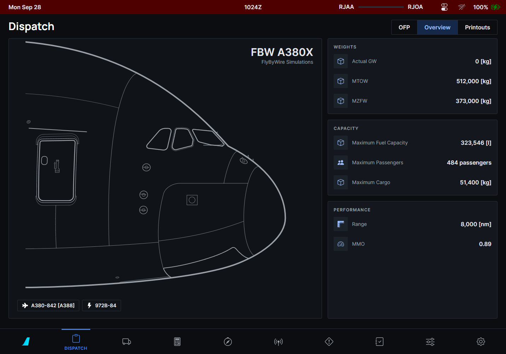
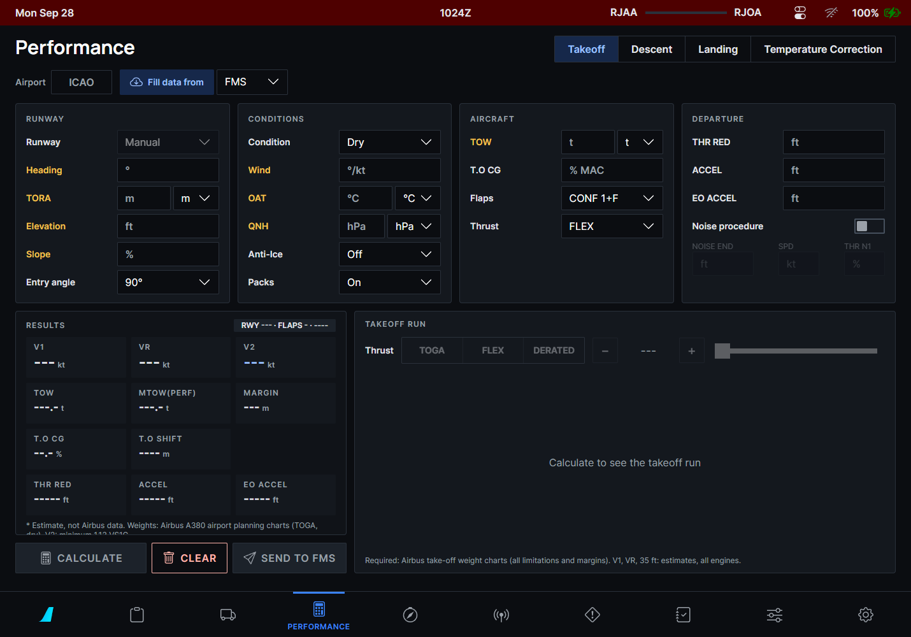
| Part | Look |
|---|---|
| Panels | Square corners, a header bar with the title in capitals, no rounded tonal cards. |
| Fields | Small label above or beside the value; the inputs of the calculators are dense rows. |
| Status boxes | Flat boxes with a short word (Complete, Not started, OK, FMS, OFP) instead of switches or big chips. |
| Buttons | Uppercase text (IMPORT SIMBRIEF OFP, OPEN COCKPIT PREPARATION, GROUND SERVICES). |
| Dashboard title bars | One colour per panel: flight blue, advisories red, turnaround green, fuel orange, payload purple, ground services magenta, weather yellow, checklists grey. |
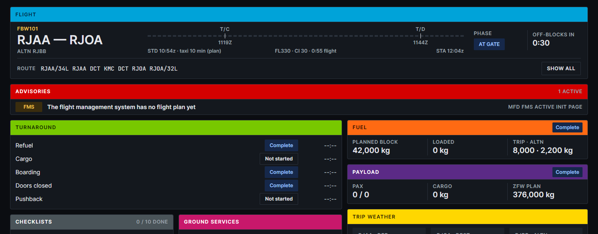
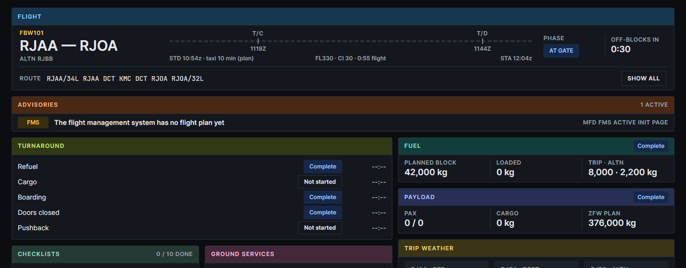
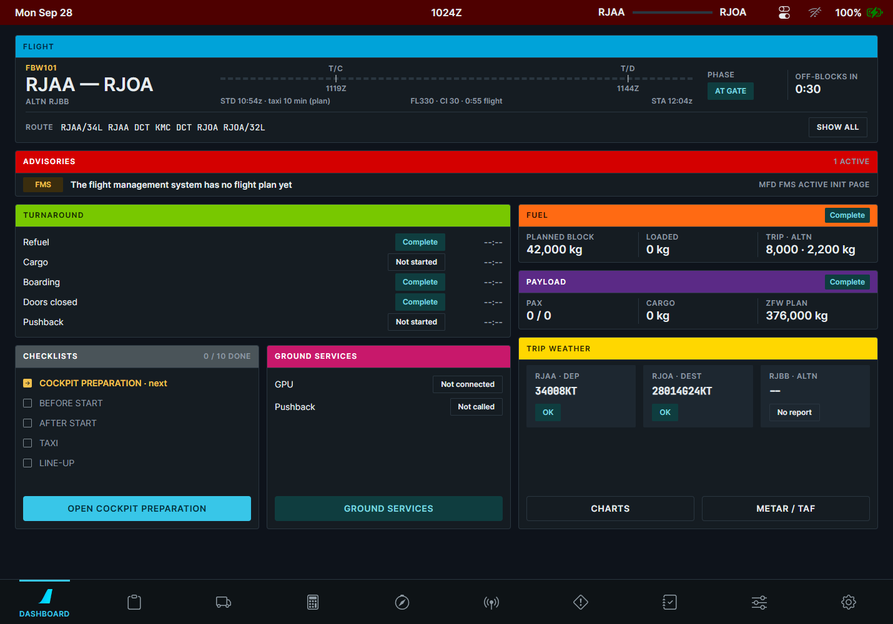
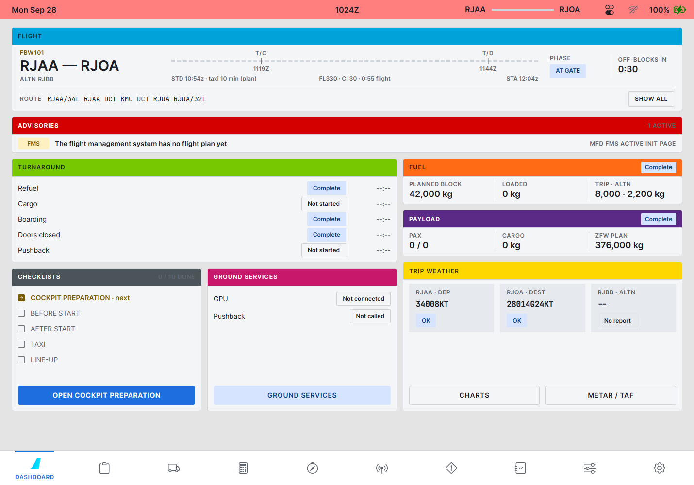
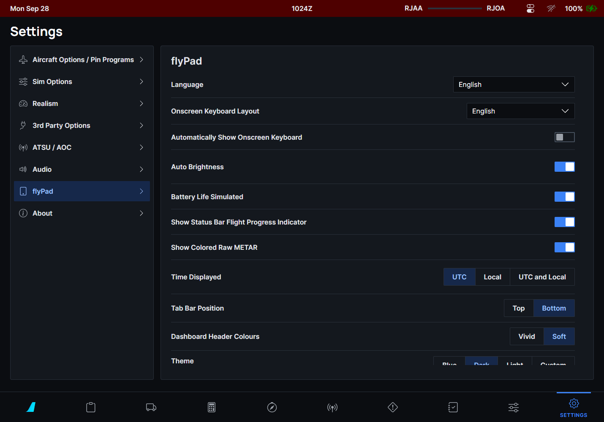
| Limitation | Why | What to do |
|---|---|---|
| The header colours apply to the Dashboard only. | The other pages use one neutral header bar. | None. |
| Pictures show the A380X only. | The harness build with the redesign was installed for the A380X. | The A32NX pages use the same components. |
| # | Do this | Expected result |
|---|---|---|
| 1 | Either aircraft, flyPad on. Open Dashboard. | Panels with a coloured header bar each (Vivid), square corners, uppercase buttons. |
| 2 | Settings > flyPad > Dashboard Header Colours > Soft, then back to the Dashboard. | The same bars in dimmed colours; Vivid brings the strong colours back. |
| 3 | Settings > flyPad > Theme: Dark, Light, Blue in turn, then open Dispatch > Overview and Performance. | Every page follows the theme; the text stays readable in Light. |
A full-width bar of icon tabs replaces the navigation rail on the left. The pages use the full width of the flyPad. The bar sits at the bottom of the flyPad (default) or at the top.
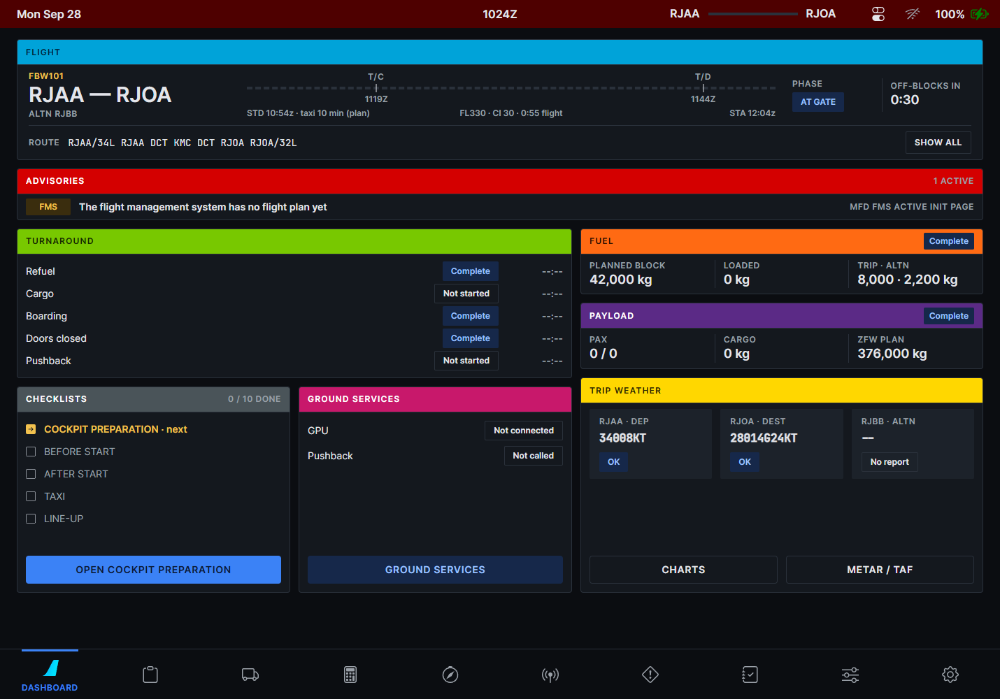
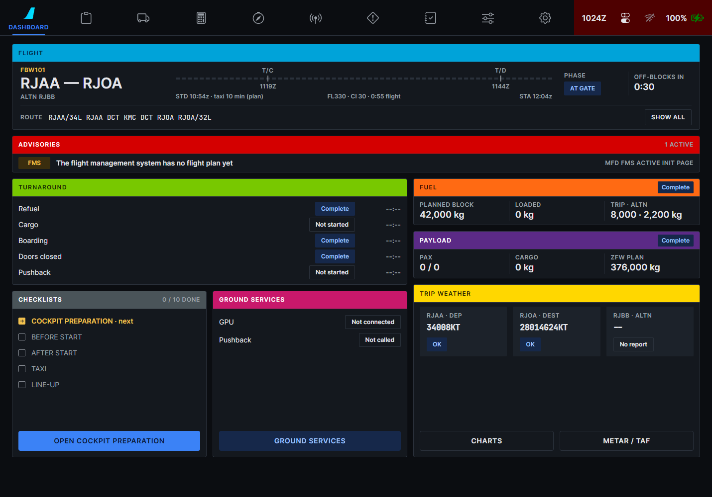
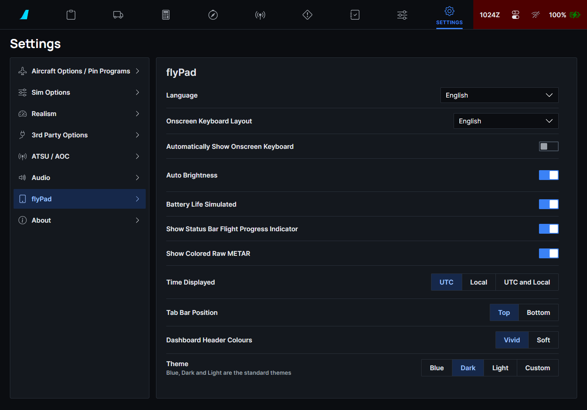
| Limitation | Why | What to do |
|---|---|---|
| The tabs have no label except the open one. | Ten labelled tabs do not fit the width of the flyPad next to the status bar when the bar is at the top. | The icons are the same as on the old rail; open the tab to read its name. |
| Only two positions: Top and Bottom. | The bar is full width by design. | None. |
| Whether the bar moves at once when the setting is changed in the sim was not checked. | In the browser harness the stored setting is read when the flyPad starts; the harness does not pass setting changes on to the open page. | If the bar does not move, reopen the flyPad (power cycle it). |
| # | Do this | Expected result |
|---|---|---|
| 1 | Either aircraft, flyPad on, default settings. | The bar is at the bottom; the open tab (Dashboard) shows its name under the icon. |
| 2 | Open each of the ten tabs. | Each opens its page; only the open tab shows a name; no page is hidden behind the bar. |
| 3 | Settings > flyPad > Tab Bar Position > Top. | The bar moves to the top, the date / clock / battery of the status bar are on its right; the pages start under it. |
| 4 | Set it back to Bottom. | The bar is at the bottom again. |
| 5 | Repeat on the first officer flyPad. | The same bar and the same setting choices. |
The SimBrief OFP is one long text. A Sections menu on the left of the OFP page lists the parts of the OFP (flight summary, fuel, navigation log, weather, ...) and jumps to the one you touch. The menu is built from the PDF bookmark comments that SimBrief writes at the start of every OFP section, in every OFP layout. A section has sub-sections (for example Fuel under Route and Fuel); they are indented.
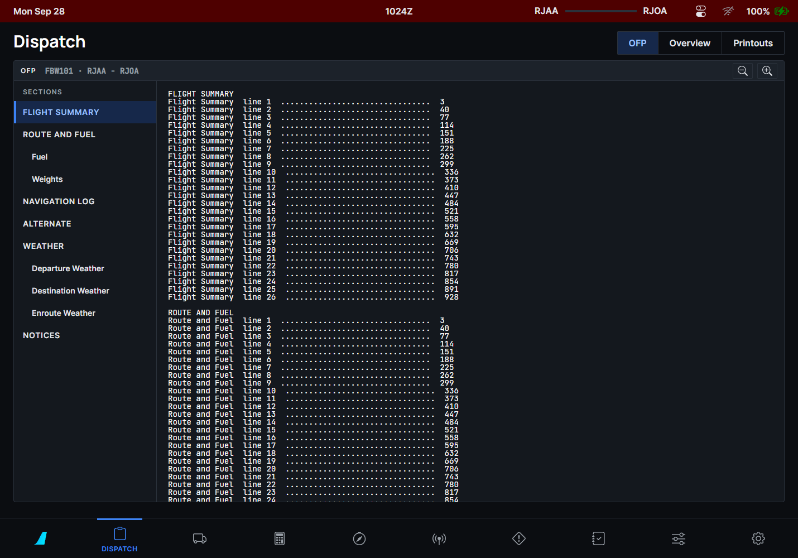
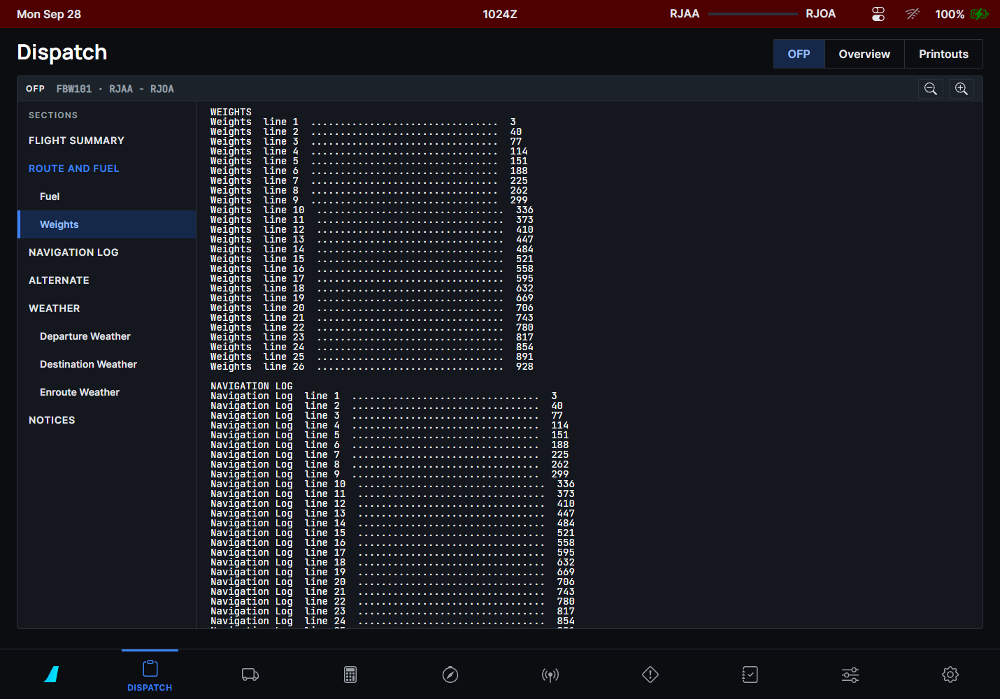
| Limitation | Why | What to do |
|---|---|---|
| An OFP without bookmarks has no menu; the OFP is shown as before. | The menu is built from the bookmark comments SimBrief puts in the OFP text. There is nothing to build it from without them. | Use another OFP layout, or scroll. |
| Only two levels (section and sub-section). | SimBrief bookmarks have level 0 and 1 in the OFP. | None. |
| # | Do this | Expected result |
|---|---|---|
| 1 | With a SimBrief OFP imported, open Dispatch > OFP. | The Sections menu is on the left with the OFP sections and their sub-sections; the first is highlighted. |
| 2 | Touch a section in the menu (for example Navigation Log). | The OFP scrolls so that the section starts at the top of the view; its menu entry is highlighted. |
| 3 | Scroll the OFP by hand to the weather section. | The highlighted entry follows to Weather. |
| 4 | Before importing an OFP, open Dispatch > OFP. | "You have not yet imported any SimBrief data." |
The Dashboard shows what matters now. It chooses its layout from the flight phase and from whether a SimBrief OFP is loaded, so the pilot sees the turnaround at the gate, the flight and the destination weather in the air, and a summary on arrival. It replaces the single layout of the old Dashboard.
| Layout | When | Panels |
|---|---|---|
| Gate, no OFP | On the ground, stationary, no OFP loaded. | Flight strip with IMPORT SIMBRIEF OFP (and LOAD PRESET), advisories, aircraft state (power, doors, park brake, ADIRS), checklists, ground services, fuel and payload (No plan), weather with an ICAO field, cabin controls. |
| Gate, OFP | On the ground, stationary, an OFP loaded, not flown yet. | Flight strip with the off-blocks countdown, advisories, turnaround rows, checklists, ground services, fuel and payload status, trip weather (departure, destination, alternate). |
| In flight | Taxi out to approach, with an OFP. | Flight strip with the progress line, checklist card with the next checklist, fuel, payload, flight plan, destination weather, cabin controls. |
| Arrived | On the ground, stationary, after the OFP has been flown. | Flight summary (block time, flight time, fuel used, landing weight, each against the plan), advisories, checklists with the missed ones, fuel, payload, destination weather and IMPORT NEXT OFP. |
| No OFP in the air | Any phase except at the gate, no OFP. | The live values only (altitude, speed, local time), with the advisory to import an OFP. |
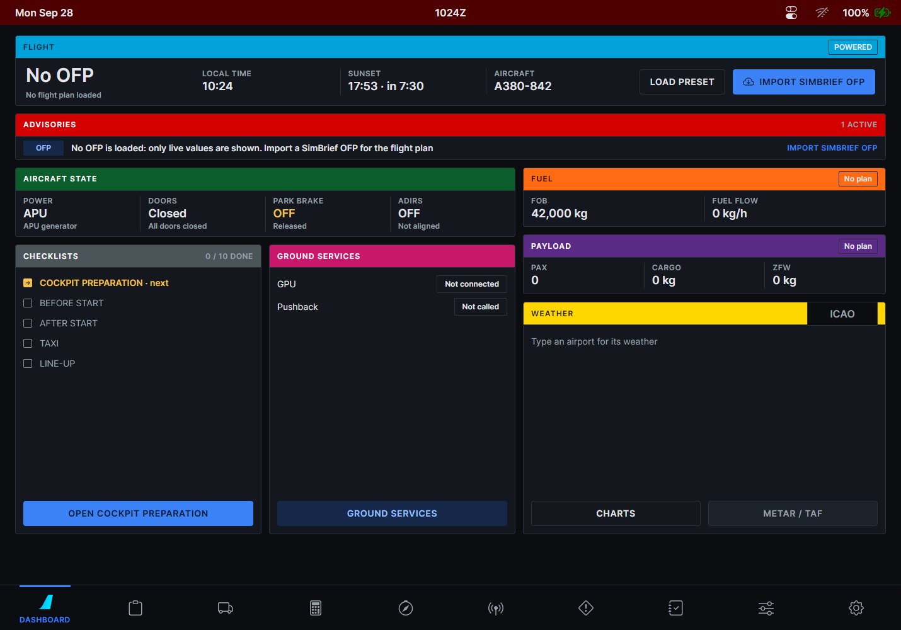
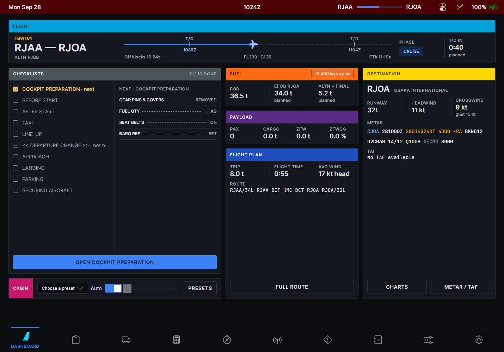
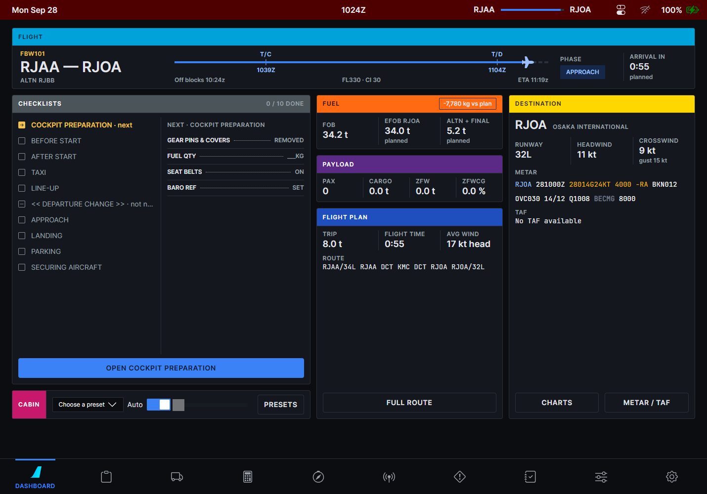
A list of short messages, the most urgent first (red, amber, then information), each with a tag and a link to where to act. The rules in the code:
| Advisory | When |
|---|---|
| Thunderstorm (likely / possible) | Destination or alternate, from the TAF and METAR at the planned arrival time; in every phase from the gate to approach. Needs a report with a TAF or METAR. |
| Crosswind | From 80 % of the aircraft limit: at the departure airport at the gate, taxiing out and on takeoff; at the destination in flight. Uses the planned runway and the METAR wind (gusts included). Links to Performance. |
| Approach data missing | In flight, within 15 minutes before the planned T/D (or in the descent phase when no T/D is known), when the destination QNH or the minimums are not entered. Names the MFD / MCDU PERF APPR page. |
| The FMS has no flight plan yet | At the gate with an OFP loaded. The flyPad asks the FMS itself every 5 seconds, so the message goes away as soon as the plan is entered. Names the MFD FMS ACTIVE INIT page (A380X) or the MCDU INIT page (A32NX). |
| Turnaround late | At the gate, when the projected end of the turnaround is within 5 minutes of the scheduled departure or later. Links to Ground. |
| Strong head / tailwind | Cruise and descent, route average of 50 kt or more. |
| No OFP is loaded | Without an OFP. Links to the import. |
| Active failures | One or more failures activated in the flyPad Failures page. |
| Fuel used differs from the plan | When arrived, with a difference of 500 kg or more. Links to Ground > Fuel. |
A card with every checklist of the aircraft and a mark each: done, missed (a later phase is already reached), optional (the names written between << >>), next and later. The first checklist not done is marked next, and its first items are previewed beside the list. A button opens the next checklist (OPEN COCKPIT PREPARATION, ... OPEN PARKING).
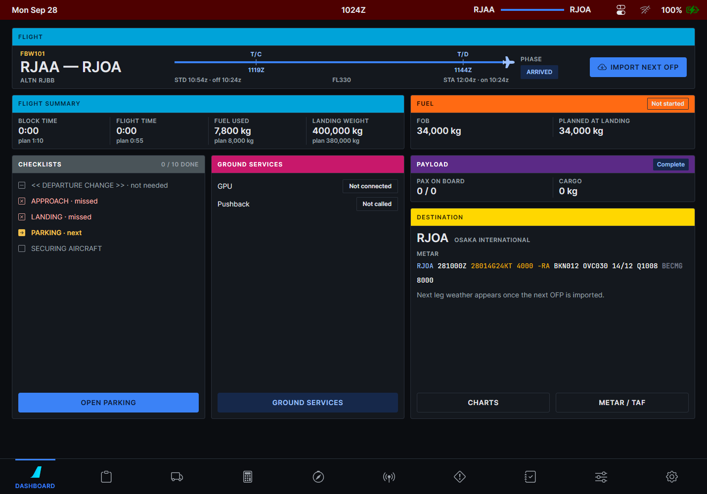
The flyPad marks the OFP as flown at touchdown. If that same OFP is loaded again with the aircraft on the ground at its departure airport (the flight was reloaded in the sim), it is a new flight: the Dashboard goes back to the gate layout and forgets what was recorded for the old flight. At the destination the same OFP stays Arrived. The airport is told by position only.
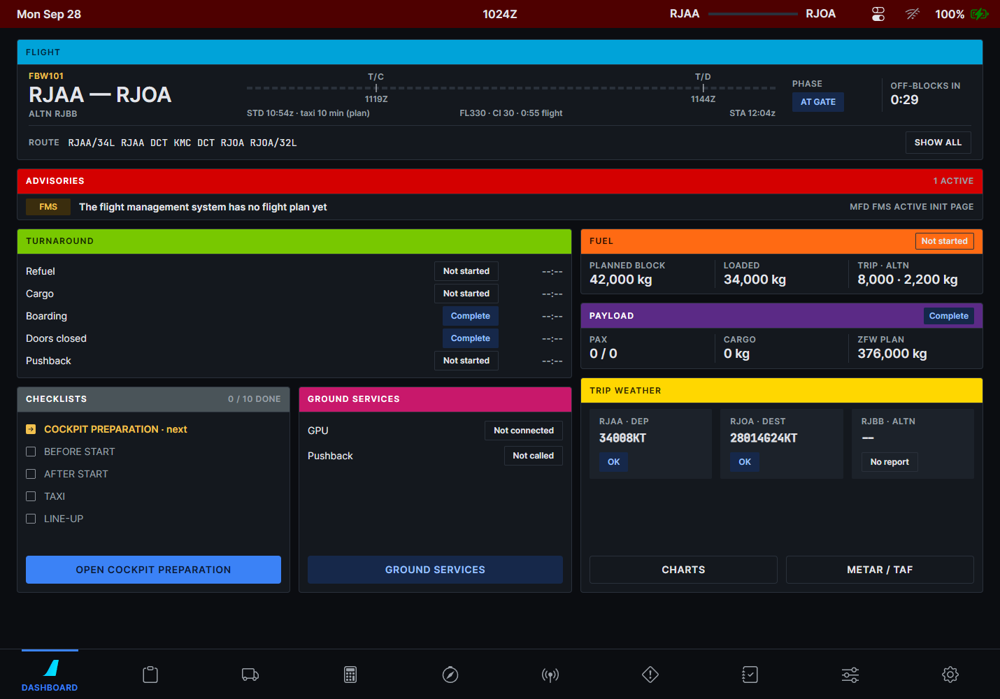
| Limitation | Why | What to do |
|---|---|---|
| The phase comes from the FMGC flight phase, the on-ground flag, the engines, the pushback and the stationary flag. | There is no single sim "flight phase" for the ground. A transient FMGC phase in the air (0 or 7) is shown as the nearest sensible phase. | None. |
| Turnaround status needs GSX or the aircraft doors. | Refuel, cargo, boarding and doors are read from them. | Without GSX the rows follow the aircraft state only. |
| Thunderstorm and crosswind advisories need a report. | They are computed from the METAR and TAF of the airports; the FlyByWire server returns no TAF at the moment (see the weather page). | Open the weather page and load the OFP report. |
| The trip weather tiles only show the reports the weather source returned. | An airport without a report shows "No report" even if the OFP carries one (the alternate in the picture). | The weather page offers the OFP report (next section). |
| The new-flight rule works by position. | The OFP has no way to tell a flown flight from a reload. | A reload at the destination stays Arrived; import the next OFP. |
| Not captured in the harness: the turnaround late, approach data, thunderstorm and crosswind advisories, and live GSX statuses. | They need the sim (GSX, FMS, real METAR at the real position). | Test them in the sim with the steps below. |
| # | Do this | Expected result |
|---|---|---|
| 1 | On the ground at the gate, no OFP loaded, open the Dashboard. | The gate layout with live values and an advisory "No OFP is loaded". |
| 2 | Touch IMPORT SIMBRIEF OFP with a valid SimBrief user. | The strip fills (flight number, airports, T/C and T/D marks, STD / STA); the phase AT GATE; the countdown OFF-BLOCKS IN. |
| 3 | With nothing entered in the MFD / MCDU, wait a few seconds. | Advisory "The flight management system has no flight plan yet" with the INIT page named. |
| 4 | Enter the flight plan in the MFD / MCDU (SimBrief uplink or manually). | The advisory disappears within about 5 seconds. |
| 5 | Run a GSX refuel / boarding. | The turnaround rows change to in progress and Complete. |
| 6 | Take off and climb. | The layout changes to the flight layout; the countdown T/D IN. |
| 7 | Enter the destination QNH late in the descent preparation, and compare. | Within 15 minutes before the planned T/D without QNH or minimums: the approach data advisory. |
| 8 | Land, vacate, stop at the gate. | The phase becomes ARRIVED with the flight summary against the plan. |
| 9 | Reload the flight at the departure airport with the same OFP still loaded. | The Dashboard is back at the gate layout (new flight). |
The METAR and TAF of the airports of the flight (departure, destination, alternate) or of any ICAO code, decoded and drawn: what the weather is, which runway end suits the wind, and how the weather will change.
Along the top: a button per airport of the flight (DEP, DEST, ALTN), the airports of the OFP that have a report but are not part of the trip (OFP), an ICAO field for any other airport, and the METAR / TAF switch.
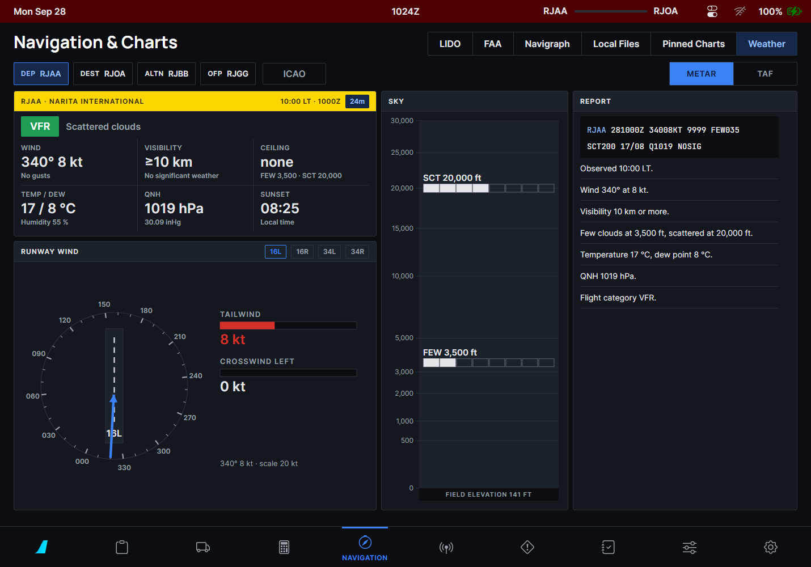
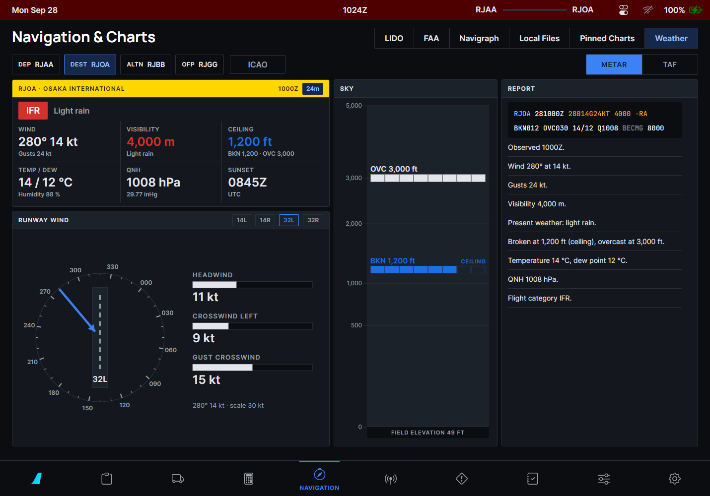
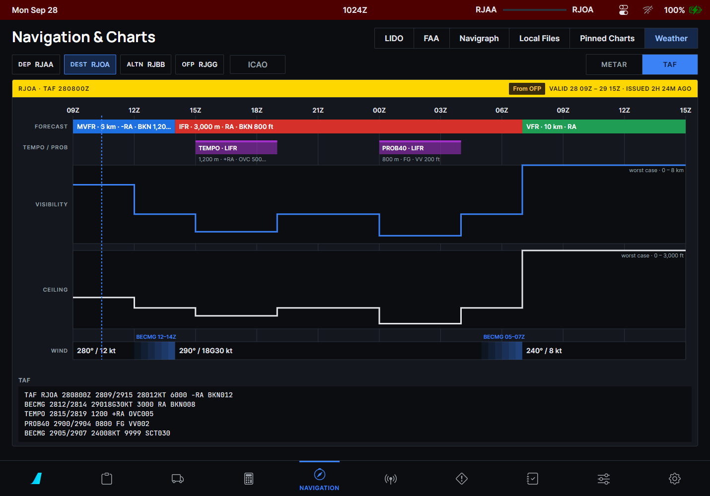
SimBrief puts the METAR and TAF of the plan's airports in the OFP. The flyPad keeps them when the OFP is imported. When the weather server has no report for the airport you are looking at, the page says so and offers LOAD METAR FROM OFP or LOAD TAF FROM OFP. After you load it, the report is shown with a From OFP chip: it is as old as the OFP. Airports of the OFP outside the trip (takeoff and en-route alternates) get an OFP button of their own.
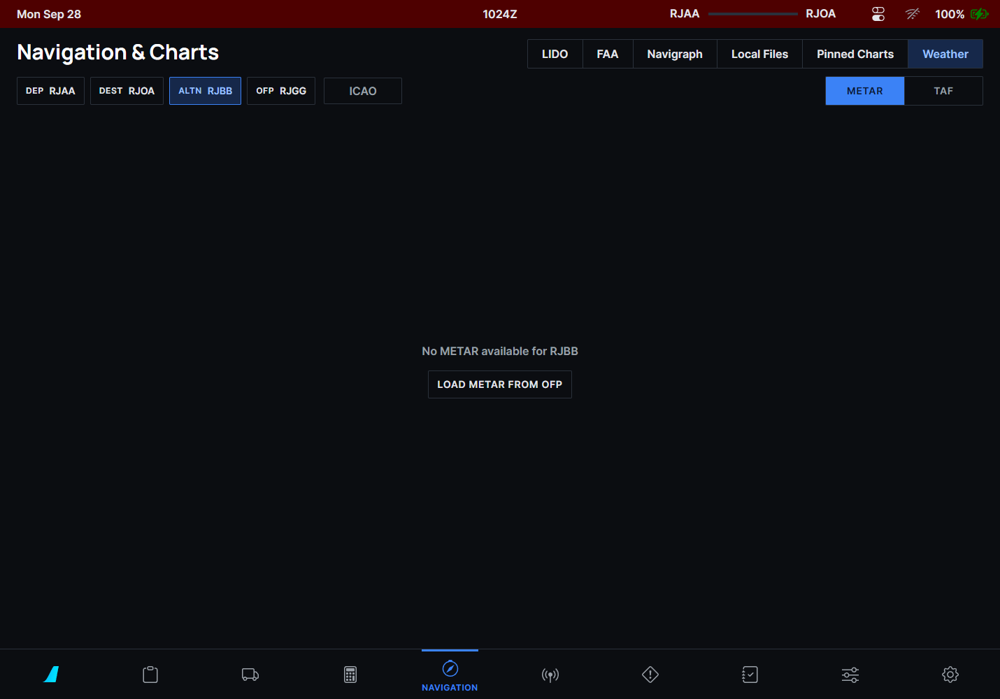
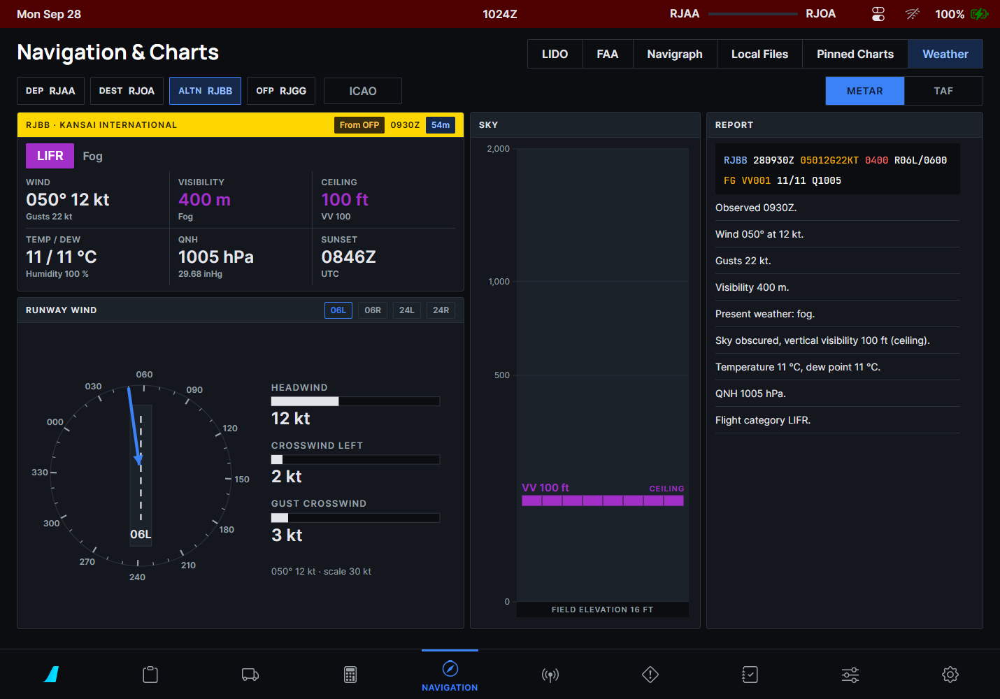
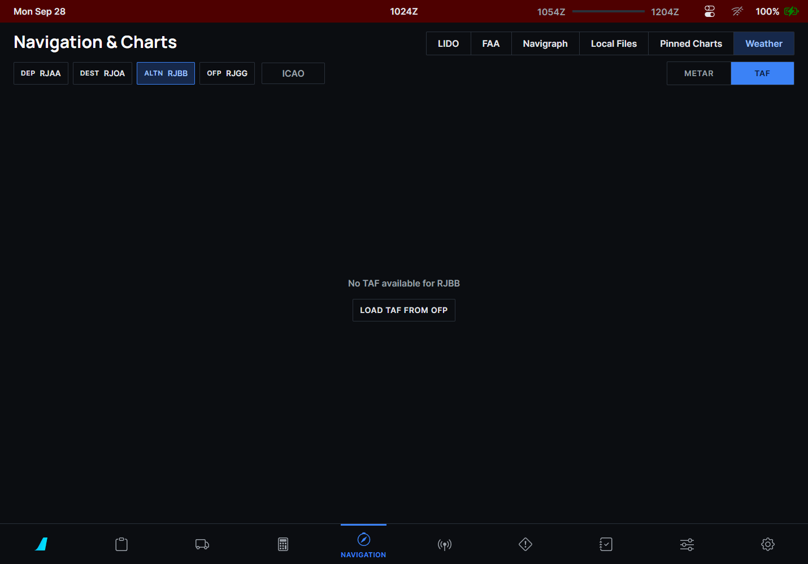
| Limitation | Why | What to do |
|---|---|---|
| The FlyByWire weather server currently returns no TAF for any airport. | The server answers without a TAF. This is why the OFP fallback exists. | Use LOAD TAF FROM OFP; the TAF is as old as the OFP. |
| The METAR of the sim comes from MSFS (the METAR source setting). | It is the weather the sim uses; other sources (BeyondATC, SayIntentions, the FlyByWire servers) are chosen in the settings. | Choose the source in Settings. |
| An OFP report is as old as the OFP, not live. | It was copied from SimBrief when the OFP was made. | The From OFP chip and the age in the header show it. |
| Only airports of the OFP can be loaded from it. | Other airports have no OFP report. | Type the ICAO; it needs the weather source. |
| The runway compass needs the airport from the sim. | The runways come from the sim facility data; the page says "Runways not available for this airport" otherwise. | The report is still shown. |
| The pictures use made-up airports and reports. | The harness has no sim weather or facility data. | None. |
| # | Do this | Expected result |
|---|---|---|
| 1 | With an OFP imported and the weather source reachable, open Navigation > Weather. | The destination METAR opens with the category box, the fields, the runway compass, the sky column and the report. |
| 2 | Touch a runway end button. | The compass and the bars change to that runway; a tailwind is red. |
| 3 | Touch DEP, then ALTN. | The reports of those airports. |
| 4 | Type another ICAO (four letters). | Its METAR is loaded, or "No METAR available for ...". |
| 5 | Touch TAF. | The timeline, or "No TAF available for ..." with LOAD TAF FROM OFP when the OFP holds one. |
| 6 | Touch LOAD TAF FROM OFP. | The TAF timeline with the From OFP chip; the valid period and "issued ... ago" above it. |
| 7 | On the Dashboard touch METAR / TAF. | The weather page opens on the airport shown there. |
| 8 | Open the weather page with no OFP loaded. | "Choose an airport of the flight or type an ICAO code". |